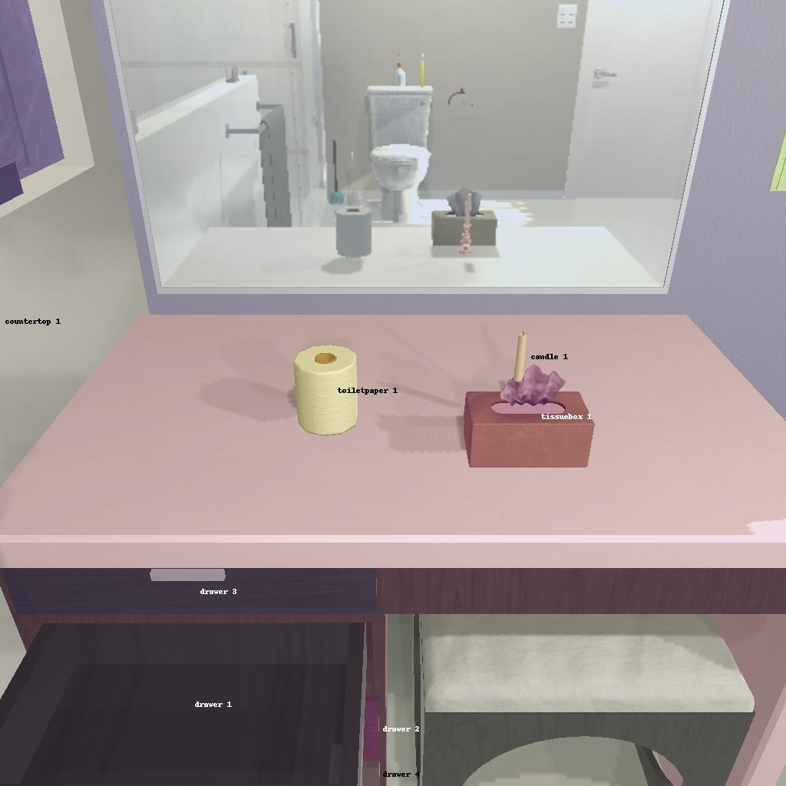

---------------------------------------------------------task: 28---------------------------------------------------------
--------------------------------------------------------------------------------------------------------------------------------------------------------------------
--------------------------------------------------------------------------------------------------------------------------------------------------------------------
Step:--------------------------------------------------------------------------13-------------------------------------------------------------------------------
----------------------------------------
VLM Prompt:
Image1:
Image2:
**Instruction**
1. Analyze the provided image to identify all visible household objects, focusing on those relevant to the task description "find two spraybottle and put them in toilet."
2. Use the analysis of the image and the task hint "The agent must find an object of the desired type, pick it up, find the correct location to place it, put it down there, then look for another object of the desired type, pick it up, return to previous location, and put it down there with the other object." to answer the question: what is the most reasonable action in the choices for the task description "find two spraybottle and put them in toilet"?
4. Decide and write the answer using the template: The answer is: (i): , where i is the real number. If there is no desired object in the image, search every place based on **Initial Observation** to find the object. And if no one is exactly correct, choose a similar answer.
**Initial Observation**
You are in the middle of a room. Looking quickly around you, you can see bathtub (1), bathtubbasin (1), cart (1), sink (1), garbagecan (1), sinkbasin (1), countertop (1), drawer (1-4), toilet (1), toiletpaperhanger (1)
**Answer Choices**
(1): go to bathtub 1
(2): go to bathtubbasin 1
(3): go to cart 1
(4): go to sink 1
(5): go to garbagecan 1
(6): go to sinkbasin 1
(7): go to drawer 2
(8): go to drawer 3
(9): go to drawer 4
(10): go to toilet 1
(11): go to toiletpaperhanger 1
(12): open drawer 1
(13): close drawer 1
(14): take tissuebox 1 from drawer 1
(15): take toiletpaper 1 from drawer 1
(16): take handtowel 1 from drawer 1
(17): take candle 1 from drawer 1
(18): examine drawer 1
**Answer**
Let's think step by step by following the instructions.
----------------------------------------
----------------------------------------
Original Response:
First, we need to find two spray bottles. From the initial observation, we do not see any spray bottles on the countertop or inside the visible open drawer. Therefore, we must search other places where the spray bottles might be. The most likely locations for spray bottles in a bathroom setting are inside drawers or on the cart.
Looking at the answer choices, we have options to go to different drawers or the cart. Since drawer 1 is already open and does not contain the spray bottles, we can eliminate choices related to drawer 1 (12, 13, 14, 15, 16, 17, 18).
We can also eliminate choices that are irrelevant to finding the spray bottles, such as going to the bathtub, bathtub basin, sink, garbage can, sink basin, toilet, and toilet paper hanger (1, 2, 4, 5, 6, 10, 11).
This leaves us with choices to go to the cart (3) or other drawers (7, 8, 9). Since the cart is specified in the initial observation and could reasonably hold cleaning supplies like spray bottles, it would be a good place to check.
The answer is: (3): go to cart 1.
----------------------------------------
----------------------------------------
>>> Refine Original VLM Response and Get Pure Action: go to cart 1
----------------------------------------
-----------------------------------------------------------------
Running time: 15.040300369262695 seconds
Total Money: 14.155080000000003
-----------------------------------------------------------------
-----------------------------------------------------------------
Text Observation:You arrive at loc 2. On the cart 1, you see a tissuebox 2, a tissuebox 3, a faucet 1, a soapbottle 2, a spraybottle 2, a spraybottle 3, a toiletpaper 2, and a soapbar 1.
-----------------------------------------------------------------
UNSUCCEED